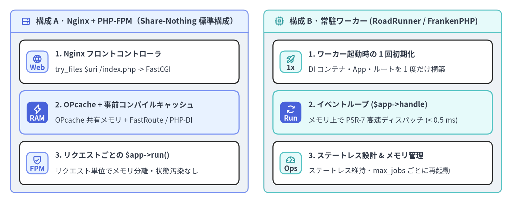
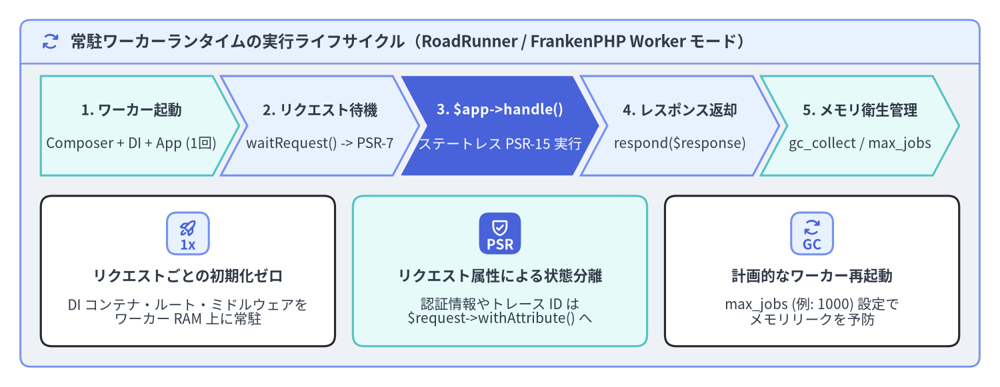

Nginx + PHP-FPM と常駐ワーカー運用
Slim（v4.15.3）は、従来型の Nginx + PHP-FPM（リクエストごとにプロセスを初期化する Share-Nothing モデル） だけでなく、RoadRunner・FrankenPHP（Worker モード）・Swoole といった常駐ワーカーランタイム（Long-Running Worker Runtime）でも最小のオーバーヘッドで動作するよう設計されています。App::handle(ServerRequestInterface $request): ResponseInterface がイミュータブルな PSR-7 メッセージを入力・出力とする完全にステートレスなメソッドであるため、ワーカー起動時に 1 度だけ App を初期化し、メモリ上で何千回も連続してリクエストを処理できます。

Source Code
from drawlib.canvas import save, setup
from drawlib.icons import phosphor
from drawlib.smartarts import CardList, Panel
from drawlib.styles import Styles
setup(width=196, height=78, dpi=150)
left_panel = Panel(
"構成 A · Nginx + PHP-FPM（Share-Nothing 標準構成）",
style=Styles.Neutral.patch(shape_r=2.0),
header_style=Styles.PrimaryNeutral.patch(shape_line_width=1.2),
text_style=Styles.DarkBold.patch(text_size=11.0),
icon=phosphor.hard_drives,
icon_style=Styles.PrimaryBold,
header_variant="filled",
header_height=8.5,
)
left_panel.draw((4.0, 4.0), width=91.0, height=70.0)
l_xy, l_w, l_h = left_panel.get_content_box((4.0, 4.0), width=91.0, height=70.0, padding=(3.5, 3.0))
cl_left = CardList(
style=Styles.White,
text_style=Styles.DarkBold.patch(text_size=10.5),
description_style=Styles.Dark.patch(text_size=10.0),
badge_shape="rounded_rect",
badge_style=Styles.PrimaryNeutral,
badge_text_style=Styles.PrimaryBold.patch(text_size=10.0),
icon_style=Styles.PrimaryBold,
direction="vertical",
spacing=2.8,
)
cl_left.add(
"1. Nginx フロントコントローラ",
"try_files $uri /index.php -> FastCGI",
badge_text="Web",
icon=phosphor.globe,
)
cl_left.add(
"2. OPcache + 事前コンパイルキャッシュ",
"OPcache 共有メモリ + FastRoute / PHP-DI",
badge_text="RAM",
icon=phosphor.lightning,
style=Styles.PrimaryNeutral,
badge_style=Styles.PrimaryFlat,
badge_text_style=Styles.WhiteBold.patch(text_size=10.0),
icon_style=Styles.WhiteBold,
)
cl_left.add(
"3. リクエストごとの $app->run()",
"リクエスト単位でメモリ分離・状態汚染なし",
badge_text="FPM",
icon=phosphor.shield_check,
)
cl_left.draw(xy=l_xy, width=l_w, height=l_h)
right_panel = Panel(
"構成 B · 常駐ワーカー (RoadRunner / FrankenPHP)",
style=Styles.Neutral.patch(shape_r=2.0),
header_style=Styles.SecondaryNeutral.patch(shape_line_width=1.2),
text_style=Styles.DarkBold.patch(text_size=11.0),
icon=phosphor.cpu,
icon_style=Styles.SecondaryBold,
header_variant="filled",
header_height=8.5,
)
right_panel.draw((101.0, 4.0), width=91.0, height=70.0)
r_xy, r_w, r_h = right_panel.get_content_box((101.0, 4.0), width=91.0, height=70.0, padding=(3.5, 3.0))
cl_right = CardList(
style=Styles.White,
text_style=Styles.DarkBold.patch(text_size=10.5),
description_style=Styles.Dark.patch(text_size=10.0),
badge_shape="rounded_rect",
badge_style=Styles.SecondaryNeutral,
badge_text_style=Styles.DarkBold.patch(text_size=10.0),
icon_style=Styles.SecondaryBold,
direction="vertical",
spacing=2.8,
)
cl_right.add(
"1. ワーカー起動時の 1 回初期化",
"DI コンテナ・App・ルートを 1 度だけ構築",
badge_text="1x",
icon=phosphor.rocket_launch,
)
cl_right.add(
"2. イベントループ ($app->handle)",
"メモリ上で PSR-7 高速ディスパッチ (< 0.5 ms)",
badge_text="Run",
icon=phosphor.arrows_clockwise,
style=Styles.SecondaryNeutral,
badge_style=Styles.PrimaryFlat,
badge_text_style=Styles.WhiteBold.patch(text_size=10.0),
icon_style=Styles.WhiteBold,
)
cl_right.add(
"3. ステートレス設計 & メモリ管理",
"ステートレス維持・max_jobs ごとに再起動",
badge_text="Ops",
icon=phosphor.gauge,
)
cl_right.draw(xy=r_xy, width=r_w, height=r_h)
save()
Slim 4 本番デプロイ・チェックリスト
Slim 4 アプリケーションを本番環境へデプロイする際は、ファイルシステム走査・正規表現ルートの再コンパイル・Reflection による DI 解決のオーバーヘッドを排除するため、以下の 5 つの最適化を必ず適用します。
| 最適化項目 | 本番環境での設定・API | ランタイムへの効果 |
|---|---|---|
| 1. Composer クラスマップ最適化 | composer install --no-dev --optimize-autoloader --classmap-authoritative |
PSR-4 オートロード時の file_exists() システムコールを完全に排除 |
| 2. FastRoute ルートキャッシュ | $app->getRouteCollector()->setCacheFile($cacheDir . '/routes.php') |
リクエストごとのルート定義解析を省略し、事前生成された PHP 配列を OPcache から即座にロード |
| 3. PHP-DI コンテナのコンパイル | $containerBuilder->enableCompilation($cacheDir . '/di') |
Reflection ベースの自動ワイヤリングを静的なファクトリ PHP クラスへ事前変換 |
| 4. ErrorMiddleware の本番フラグ | $app->addErrorMiddleware(displayErrorDetails: false, logErrors: true, logErrorDetails: true, logger: $logger) |
HTTP レスポンスへのスタックトレース露出を防ぎつつ、PSR-3 ログには完全な診断情報を記録 |
| 5. OPcache + JIT の固定化 | opcache.validate_timestamps=0, opcache.memory_consumption=256, opcache.jit_buffer_size=64M |
Slim・PSR-7・FastRoute・ドメイン層のオペコードを共有メモリ上に常駐化 |
CI/CD の Docker イメージビルド段階で以下のコマンドを実行し、本番用オートローダとキャッシュディレクトリを準備します。
# 1. 開発用パッケージを除外し、権威的クラスマップ（classmap-authoritative）を生成
composer install --no-dev --prefer-dist --optimize-autoloader --classmap-authoritative
# 2. FastRoute および PHP-DI のコンパイル済みキャッシュ格納ディレクトリを作成
mkdir -p var/cache/di var/cache/routes && chmod -R 755 var/cache
続いて、ブートストラップ設定内で ContainerBuilder::enableCompilation() と RouteCollector::setCacheFile()、および本番用 ErrorMiddleware フラグを有効化します。
<?php
declare(strict_types=1);
use DI\ContainerBuilder;
use Psr\Log\LoggerInterface;
use Slim\Factory\AppFactory;
$isProduction = ($_ENV['APP_ENV'] ?? 'production') === 'production';
$cacheDir = __DIR__ . '/../var/cache';
// 1. 本番環境では PHP-DI コンテナを事前コンパイルし、実行時の Reflection コストをゼロにする
$containerBuilder = new ContainerBuilder();
if ($isProduction) {
$containerBuilder->enableCompilation($cacheDir . '/di');
$containerBuilder->writeProxiesToFile(true, $cacheDir . '/di/proxies');
}
(require __DIR__ . '/../config/dependencies.php')($containerBuilder);
$container = $containerBuilder->build();
// 2. Slim App を生成し、FastRoute ディスパッチテーブルのファイルキャッシュを有効化
$app = AppFactory::createFromContainer($container);
if ($isProduction) {
$app->getRouteCollector()->setCacheFile($cacheDir . '/routes/fastroute.php');
}
(require __DIR__ . '/../config/routes.php')($app);
$app->addBodyParsingMiddleware();
$app->addRoutingMiddleware();
// 3. 本番環境では displayErrorDetails を必ず false に設定する
/** @var LoggerInterface $logger */
$logger = $container->get(LoggerInterface::class);
$app->addErrorMiddleware(
displayErrorDetails: !$isProduction,
logErrors: true,
logErrorDetails: true,
logger: $logger
);
[!WARNING]
RouteCollector::setCacheFile()は FastRoute のディスパッチテーブルを PHP 配列ファイル（return [...]）として書き出します。無名関数（Closure）は配列ファイルへシリアライズできないため、キャッシュを有効化する本番構成ではすべてのルートハンドラを PSR-11 コンテナのクラス名文字列（CreateUserAction::class）または[ClassName::class, 'method']形式で登録してください。
Nginx + PHP-FPM と OPcache / JIT の本番構成
王道の Nginx + PHP-FPM 構成では、Nginx が静的ファイルを直接配信し、それ以外のすべての URI を try_files $uri /index.php$is_args$args; で public/index.php の FastCGI ソケットへ転送します。イミュータブルなコンテナ環境では opcache.validate_timestamps=0 を設定することで、リクエストごとのファイル更新日時確認（stat() システムコール）も省略できます。
# /etc/nginx/conf.d/slim-api.conf
server {
listen 8080;
server_name api.example.com;
root /var/www/app/public;
index index.php;
# セキュリティ設定：バージョン番号の非表示化と隠しファイルへのアクセス拒否
server_tokens off;
location ~ /\. {
deny all;
}
# すべてのリクエストを Slim のフロントコントローラへ転送
location / {
try_files $uri /index.php$is_args$args;
}
location ~ ^/index\.php(/|$) {
fastcgi_pass 127.0.0.1:9000;
fastcgi_split_path_info ^(.+\.php)(/.*)$;
include fastcgi_params;
fastcgi_param SCRIPT_FILENAME $realpath_root$fastcgi_script_name;
fastcgi_param DOCUMENT_ROOT $realpath_root;
internal;
}
# public/ 配下のその他の .php ファイルへの直接アクセスは 404 を返す
location ~ \.php$ {
return 404;
}
}
# /usr/local/etc/php/conf.d/99-production.ini の推奨設定：
# opcache.enable=1
# opcache.memory_consumption=256
# opcache.max_accelerated_files=20000
# opcache.validate_timestamps=0
# opcache.jit=tracing
# opcache.jit_buffer_size=64M
# realpath_cache_size=4096K
# realpath_cache_ttl=600
常駐ワーカーランタイム（RoadRunner・FrankenPHP・Swoole）
さらなる低レイテンシ（サブミリ秒の p99 応答）や CPU コアあたり 5〜10 倍のスループットが求められる環境では、RoadRunner、FrankenPHP（Worker モード）、または OpenSwoole といった常駐ワーカーランタイム上で Slim 4 を稼働させることができます。App は PSR-15 の RequestHandlerInterface を実装しているため、ワーカープロセスの起動時に DI コンテナ・ミドルウェアパイプライン・FastRoute を 1 度だけ初期化し、イベントループ内で $response = $app->handle($request) を繰り返し呼び出すだけで動作します。

Source Code
from drawlib.canvas import save, setup
from drawlib.icons import phosphor
from drawlib.shapes import rectangle
from drawlib.smartarts import CardList, ChevronProcess, Panel
from drawlib.styles import Styles
from drawlib.text import text
setup(width=196, height=76, dpi=150)
outer = Panel(
"常駐ワーカーランタイムの実行ライフサイクル（RoadRunner / FrankenPHP Worker モード）",
style=Styles.Neutral.patch(shape_r=2.0),
header_style=Styles.PrimaryNeutral.patch(shape_line_width=1.2),
text_style=Styles.DarkBold.patch(text_size=11.5),
icon=phosphor.arrows_clockwise,
icon_style=Styles.PrimaryBold,
header_variant="filled",
header_height=8.5,
)
outer.draw((4.0, 4.0), width=188.0, height=68.0)
proc = ChevronProcess(
style=Styles.White,
text_style=Styles.DarkBold.patch(text_size=10.2),
description_style=Styles.Dark.patch(text_size=10.0),
corner_angle=62.0,
spacing=1.6,
flat_left_end=True,
)
proc.add(
"1. ワーカー起動",
description="Composer + DI + App (1回)",
style=Styles.SecondaryNeutral,
)
proc.add(
"2. リクエスト待機",
description="waitRequest() -> PSR-7",
style=Styles.PrimaryNeutral,
)
proc.add(
"3. $app->handle()",
description="ステートレス PSR-15 実行",
style=Styles.PrimaryFlat,
text_style=Styles.WhiteBold.patch(text_size=10.2),
description_style=Styles.White.patch(text_size=10.0),
)
proc.add(
"4. レスポンス返却",
description="respond($response)",
style=Styles.PrimaryNeutral,
)
proc.add(
"5. メモリ衛生管理",
description="gc_collect / max_jobs",
style=Styles.SecondaryNeutral,
)
proc.draw(xy=(8.0, 41.5), width=180.0, height=19.5)
cards = CardList(
style=Styles.White,
text_style=Styles.DarkBold.patch(text_size=10.5),
description_style=Styles.Dark.patch(text_size=10.0),
badge_shape="rounded_rect",
badge_style=Styles.PrimaryNeutral,
badge_text_style=Styles.PrimaryBold.patch(text_size=10.0),
icon_style=Styles.PrimaryBold,
direction="horizontal",
spacing=3.5,
)
cards.add(
"リクエストごとの初期化ゼロ",
"DI コンテナ・ルート・ミドルウェアを\nワーカー RAM 上に常駐",
badge_text="1x",
icon=phosphor.rocket_launch,
)
cards.add(
"リクエスト属性による状態分離",
"認証情報やトレース ID は\n$request->withAttribute() へ",
badge_text="PSR",
icon=phosphor.shield_check,
style=Styles.SecondaryNeutral,
badge_style=Styles.PrimaryFlat,
badge_text_style=Styles.WhiteBold.patch(text_size=10.0),
icon_style=Styles.WhiteBold,
)
cards.add(
"計画的なワーカー再起動",
"max_jobs (例: 1000) 設定で\nメモリリークを予防",
badge_text="GC",
icon=phosphor.arrows_clockwise,
)
cards.draw(xy=(8.0, 8.0), width=180.0, height=29.5)
save()
常駐ワーカー上で Slim 4 を運用する際は、以下の 3 つのステートレス設計ルールを徹底してください。
- シングルトンサービスにリクエスト固有の状態を保持しない: 認証済みユーザー情報やリクエスト ID などのコンテキストは、DI コンテナ上のサービスのプロパティに書き込むのではなく、必ず
$request->withAttribute(...)経由で受け渡します。 - DB コネクションの死活監視と再接続: ワーカープロセスはリクエストを跨いで PDO 接続を維持するため、アイドルタイムアウト後の自動再接続やコネクションプールのヘルスチェックを有効化します。
- 一定リクエスト数ごとのワーカー再起動（
max_jobs）: RoadRunner のmax_jobs: 1000や FrankenPHP のMAX_REQUESTS=1000を設定し、一定数のリクエストを処理したワーカーをグレースフルに再起動してメモリ肥大化を防ぎます。
<?php
declare(strict_types=1);
// worker.php — RoadRunner 用 Slim 4 PSR-7 ワーカーエントリポイント
use Nyholm\Psr7\Factory\Psr17Factory;
use Spiral\RoadRunner\Http\PSR7Worker;
use Spiral\RoadRunner\Worker;
require __DIR__ . '/vendor/autoload.php';
// 1. ワーカー起動時に 1 度だけ PSR-11 コンテナ・Slim App・ミドルウェア・ルートを初期化する
/** @var \Slim\App<\Psr\Container\ContainerInterface> $app */
$app = require __DIR__ . '/bootstrap/app.php';
$psr17Factory = new Psr17Factory();
$psr7Worker = new PSR7Worker(
Worker::create(),
$psr17Factory,
$psr17Factory,
$psr17Factory
);
// 2. 到着する PSR-7 リクエストをメモリ上の $app->handle($request) で高速処理
while ($request = $psr7Worker->waitRequest()) {
try {
$response = $app->handle($request);
$psr7Worker->respond($response);
} catch (Throwable $e) {
$psr7Worker->getWorker()->error((string) $e);
} finally {
gc_collect_cycles();
}
}
以上で Slim 4 実践ユーザーガイド の全 6 章・12 ページは完結です。必要に応じて PHPUnit によるインメモリ HTTP テスト、ErrorMiddleware とカスタム ErrorRenderer、または ガイド総合目次 を振り返りつつ、さらに深いクラス仕様や内部設計については以下の関連ポータルもぜひご活用ください。
- Slim 4 API Reference (
slim.drawlib.com/api/) — Slimv4.15.3の全クラス・インターフェース・メソッドの詳細リファレンス。 - Slim 4 Internal Architecture (
slim.drawlib.com/architecture/) —App、MiddlewareDispatcher、CallableResolver、FastRoute 統合の内部実装解説。 - PNI501 Audit Report (
slim.drawlib.com/pni501/) — Slim 4 コードベースの品質・セキュリティ監査レポート。